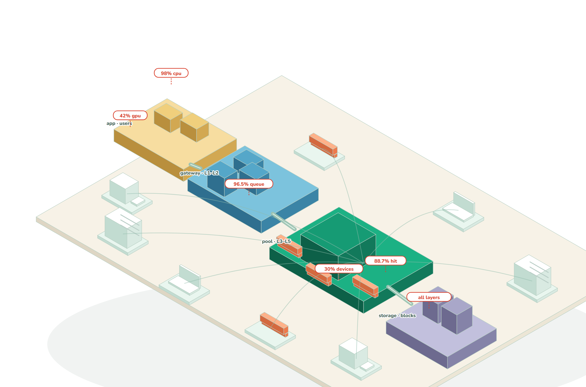

PASADHI
AI compute on the computers you already own
PASADHI · private compute for existing office fleets
Open-core prototype · seeking design partners
The first customer already has a fleet
The assets50–200 office PCs on one LAN; local data and a named IT owner
The frictionSeparate machines, resource limits and manual coordination
The openingOne repeatable batch workload that must stay on site
Initial ICP hypothesis: on-site IT teams with a recurring, private batch workload
One install. A controlled share of every machine
CPU · GPU · RAM · disk · network

Windows EXE available; Python bundles for Linux/macOS and Android through Termux
Private batch compute is the first wedge
Start with matrix-heavy analysis, image processing or small-model inference that fits the available hardware
One site.
One workload.
One measured outcome.
Customer discovery and real-workload validation come before fleet expansion
A measured baseline, with visible limits
58–74GFLOP/sLocal f32 BLAS baseline
157×prefix-cache speedupInherited gateway experiment
90.15%routing accuracy6,000-query research test
Research evidence: local CPU tests and inherited SUAY mock-backend experiments; not customer traction
Reused context can remove the wait
Time to first token on an 8,000-token document
111.4 s → 0.71 s
Cold prefix111.4 s
Reused prefix0.71 s
Measured in the inherited SUAY mock-backend test; caching is one component of the proposed product
Sell a verified outcome, then a recurring plan
$1,4564-week pilotProposed; credited to year one
$44.28per node / monthProposed standard plan
$16.37per node / monthModelled operating cost basis
Pricing hypothesis, not booked revenue. USD conversion: 33.65 local units per dollar
Global spending supports a focused local wedge
$500Bcloud infrastructure revenueTrailing 12 months to Q2 2026; Synergy estimate
$5.124TNVIDIA equity market capLive-source snapshot accessed 23 Oct 2026
18 siteslean profit thresholdOur operating scenario; demand unvalidated
Spending sizes demand context; public market cap is a valuation reference. PASADHI addressable demand needs validation.
A bottom-up path to $2.66M ARR
× $44.28 per node / month × 12 months
100 sites × 50 nodes
Illustrative operating scenario; not TAM, forecast, signed pipeline or current ARR
Win where control and reuse matter
| Approach | Best fit | Trade-off |
|---|
| Cloud GPU | Maximum throughput per dollar | Data movement and external service requirements |
| DIY local stack | Teams with systems expertise | Integration and ongoing operations |
| PASADHI proposal | Existing fleets; private batch jobs | Lower raw efficiency; product still at M0 |
Owned CPU compute is modelled at about 17× the A100 cost per delivered TFLOP
One pilot creates the next buying decision
01BaselineFive machines. One real workload. Three days.
02Paid pilotFour weeks. Agree on speed, cost and recovery gates.
03ExpandAnnual plan only after the customer sees the result.
Proposed go-to-market motion; no signed pilots or paying customers claimed
Prove two hosts before scaling the story
Months 1–5Product + pilotRecovery tests, one real workload and two paid-pilot targets
Months 6–12RepeatabilityTen paid-site target; verify retention and support cost
Months 13–24Economics + growthEighteen-site profit gate; renewal evidence and next-round readiness
First delivery in five months; cash runway planned for 24 months. All customer milestones are targets.
Built in the open. Ready for design partners.
Founder-led engineering · MIT open core · reproducible research
Mr. Supakrit Wapakpetch
and AI Team
Engineering focusKernels, scheduling and reliable local deployment
Partner focusA lab or IT team with one measurable workload
Current stage: M0 prototype; commercial demand remains to be validated
$750k for a repeatable, paid compute product
24-month runway · first product and pilot gates in five months
Product gateTwo-host recovery, ten-host validation and real-workload ROI
Commercial gateTen paid sites by month 12; eighteen-site profit gate targeted by month 18
Proposed raise. Customer targets are unvalidated; revenue is excluded from the base cash-runway calculation.
Research question: when does pooling pay?
Useful throughput
after coordination cost
DesignMatrix-first kernels and bounded process layers
QuestionWhich workloads survive memory and network limits?
TestCompare single-host, pipeline and multi-host execution
Academic extension · distributed-plane claims require new multi-host measurements
Read every result with its test conditions
Local kerneli7-8550U; BLAS baseline; tiling and int8 comparisons
Inherited gateway50 containers on one 8-vCPU host; Docker Desktop; mock backend
Fleet capacityParameterized hardware models; no deployed 1,450-card fleet
Neither a container count nor a simulated fleet is a customer deployment
The negative results shape the design
7–11GFLOP/sTiled fallback vs 58–74 BLAS
0.26–0.55×single-loop throughputProcess pipeline on one host
8.5%surviving computeModelled f32 sharding on 1 GbE
Keep inner loops local; use independent jobs before tightly coupled sharding
A fleet model is a capacity hypothesis
9.54PFLOPS f32Aggregate modeled capacity
47.7POPS int8Mixed 1,450-card scenario
143.5kWModelled fleet power
Modelled totals, not measured end-to-end throughput; placement, bandwidth and VRAM constrain delivery
Reproduce the baseline. Challenge the assumptions.
ReadSolution paper · full evidence paper · MIT source
Runpython bench/run.py --quick
Validate nextReal workloads, independent hosts, fault recovery and power
pasadhi.tech · github.com/camponggogo/pasadhi
24-month use of funds: $750,000
| Use | Amount | Share |
|---|
| Engineering | $337,500 | 45% |
| Pilot delivery + QA | $112,500 | 15% |
| Customer discovery + sales | $112,500 | 15% |
| Security + legal + operations | $75,000 | 10% |
| Contingency | $112,500 | 15% |
| Total | $750,000 | 100% |
$626k staged operations + $11.5k deployment reserve + $112.5k contingency. No revenue assumed for runway.
Operating profit needs 18 paid sites
| Scenario | Sites / nodes | MRR | Profit / month |
|---|
| Downside | 5 / 250 | $11,070 | -$17,022 |
| Base | 10 / 500 | $22,140 | -$10,045 |
| Profit gate | 18 / 900 | $39,852 | $1,119 |
| Expansion | 25 / 1250 | $55,350 | $10,888 |
Steady-state scenarios: $44.28 price; $16.37/node direct cost; $24k/month fixed overhead from month six. Not a forecast.
Separate delivery gates from cash runway
Months 1–5Two paid-pilot targets; validate workload ROI and recovery
Months 6–12Ten paid-site target; validate retention and support burden
Months 13–24Eighteen-site profit gate; renewals and next-round readiness
Review evidence and cash monthly. Missed gates trigger scope or hiring changes before contingency release.
Financing terms: a negotiation framework
| Post-money cap | Proposed raise | Illustrative ownership |
|---|
| $3.75M | $750k | 20.00% |
| $5.0M | $750k | 15.00% |
| $7.5M | $750k | 10.00% |
Post-money SAFE illustration before future-round dilution; cap is not an independent appraisal. No YC affiliation implied.
Runway guidance has moved beyond a short pilot
| Source | Guidance | Planning use |
|---|
| YC seed guide | 12–18 months | Older milestone-based baseline |
| Carta / CRV guidance | 24–30 months | Allow for longer funding intervals |
| PASADHI proposal | 24 months | Five-month delivery gate within longer cash runway |
Guidance is not a universal rule or observed runway median. Financing needs follow milestones and cash costs.